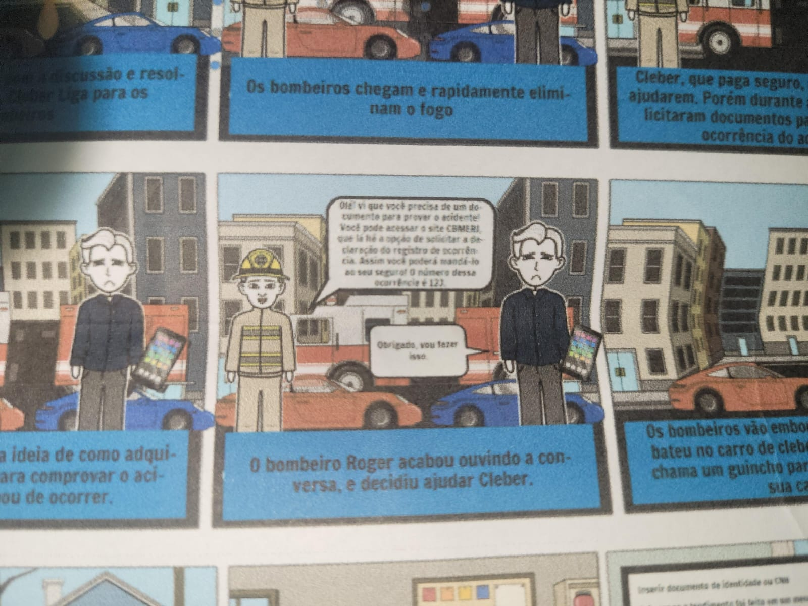

Relato dos resultados
Introdução
A apresentação dos resultados envolve a coleta e a interpretação de dados que ajudam no desenvolvimento de soluções de IHC e na melhoria dos projetos. Além disso, essas informações são fundamentais para entender a percepção do usuário sobre a funcionalidade que está sendo analisada.
Cronograma executado de entrevistas
Segue abaixo na tabela 1, o cronograma das entrevistas feitas:
| Entrevistador(es) | Entrevistado(s) | Horário do Início | Horário do Fim | Data | Tarefa(s) | Local |
|---|---|---|---|---|---|---|
| Mariana Letícia | Bernardo Machado | 10:00 | 10:15 | 24/05/2024 | Solicitar declaração de registro de ocorrência | FGA |
| Daniela Alarcão | Felipe da Silva Xavier Pereira | 17:00 | 17:04 | 28/05/2024 | Agendamento de atendimento presencial | PGJM |
| Pedro Henrique | Lorrane | 12:00 | 12:30 | 30/05/2024 | CB Cursos 2 | Residência Domiciliar |
| Lucas Avelar | Rafaella Porto | 17:00 | 17:30 | 02/06/2024 | CB Cursos 1 | Residência Domicilar |
| Bruna Lima | Marina Márcia | 14:45 | 14:53 | 29/05/2024 | Solicitação de Ficha de Atendimento | FGA |
| Genilson | Dylan Medeiros | 11:00 | 11:20 | 03/06/2024 | Checar e Gerar Certificado | FGA |
Tabela 1: Cronograma executado de entrevistas
Fonte: Mariana Letícia
Metodologia
A apresentação dos resultados será realizada conforme o planejamento de relato dos resultados do storyboard, com o objetivo de extrair o máximo de informações da entrevista gravada, interpretar esses dados e desenvolver soluções de IHC.
Os dados como os objetivos, seleção dos participantes e metodologia já foram esclarecidos no planejamento, portanto, não os abordaremos no relato dos resultados.
No contexto dos Storyboards, abordaremos as perguntas gerais feitas e perguntas sobre os storyboards. Ademais, serão descritas as respostas coletadas.
Entrevista 1 - Obter Declaração do registro de ocorrência - Mariana Letícia
Link para o vídeo da apresentação
Vídeo 1: Entrevista 1 - funcionalidade obter declaração de registro de ocorrência
Fonte: Mariana Letícia.
- Coleta de dados: foram adicionadas perguntas gerais sobre o entrevistado e sobre o storyboard daquela funcionalidade em específico.
As perguntas e respostas representando a coleta de dados da entrevista 1 estão explícitas abaixo na tabela 2:
| Número | Pergunta | Respostas |
|---|---|---|
| 1 | Qual o seu nome? | Bernardo Machado Gasparso Lemes |
| 2 | Qual a sua idade? | 19 anos |
| 3 | Como avalia o seu grau de experiência tecnológica? | Possui bom conhecimento sobre tecnologia |
| 4 | Já utilizou algum site similar ao CBMERJ? | Sim, já usei o Próprio CBMERJ |
| 5 | As sequências de passos apresentadas nos storyboards são claras e compreensíveis? | Sim |
| 6 | O contexto das histórias é facilmente compreendido pelo usuário? | Foi sim |
| 7 | Os elementos visuais utilizados nos storyboards são eficazes para transmitir a mensagem e guiar o usuário? | No geral sim, mas existe uma caixa de diálogo que ficou muito pequena dificultando a leitura |
| 8 | Há alguma parte dos storyboards que possam causar confusão ou dificuldades para o usuário? | Não, nenhum trecho |
| 9 | Você indica alguma mudança em específico nessa história? Qual? | Não indico nenhuma |
| 10 | A sequência de fatos é coerente e funcional? | Sim |
Fonte - Bruna Lima, Daniela Alarcão, Genilson Junior, Lucas Avelar, Mariana Letícia e Pedro Henrique.
Tabela 2 - Roteiro de perguntas da entrevista.
-
Interpretação dos dados:
- No geral, o participante aparentou e explicitou, com o feedback, ter compreendido a funcionalidade de obter declaração dos registros de ocorrência.
- O participante descreveu que a storyboard possui um contexto fácil de entender.
- O storyboard é verossímil.
- Os elementos visuais estão adequados para o que se espera de um storyboard.
- O storyboard apresenta diálogos pequenos o que dificulta a leitura do entrevistado.
- Conclusão: segundo o participante, o storyboard apresenta uma sequência lógica de passos e condiz com a realidade. O que se precisa de se atentar é sobre a impressão dos storyboards que precisa de uma qualidade maior e as letras precisam estar em uma fonte maior.
-
Lista de problemas encontrados:
- problema 1: segue abaixo na figura 1 o erro notado
- descrição: dificuldade de leitura, onde tem uma letra muito pequena em uma das caixas de diálogo.
- local: aconteceu no oitavo quadrinho da tirinha.
- impacto: não entendimento dessa parte da tirinha e consequentemente de um passo para se concluir a funcionalidade em questão.
- Solução: melhorar legibilidade da letra a aumentando.
- problema 1: segue abaixo na figura 1 o erro notado

Figura 1: Erro na declaração do registro de ocorrência
- Sugestões de melhoria:
- Uma das sugestões foi aumentar a caixa de diálogo dos personagens do storyboard.
- Aumentar a fonte da letra do storyboard.
- Melhorar a qualidade do documento e da impressão.
Entrevista 2 - Solicitar Ficha de Atendimento - Bruna Lima
Link para o vídeo da entrevista
Vídeo 2: Entrevista 2 - Funcionalidade de Solicitar Ficha de Atendimento
Fonte: Bruna Lima.
-
Coleta de dados: Para a entrevista sobre o storyboard da Solicitação de Ficha de Atendimento, foram realizadas perguntas tanto fechadas quanto abertas. A entrevistada foi a Marina Márcia, de 23 anos, estudante da FGA.
As perguntas e suas respectivas respostas podem ser encontradas na Tabela 3 abaixo:Número Pergunta Respostas 1 Observando o storyboard da Solicitação de Ficha de Atendimento, a sequência de passos é coerente? Sim 2 O contexto da história é facilmente compreendido? Sim, totalmente 3 O contexto descrito no storyboard é um exemplo de uso dessa funcionalidade, você acredita que ele corresponde à realidade de uso? Sim 4 Você gostaria de adicionar alguma sugestões de melhoria? Não Fonte - Bruna Lima, Daniela Alarcão, Genilson Junior, Lucas Avelar, Mariana Letícia e Pedro Henrique.
Tabela 3 - Roteiro de perguntas da entrevista 2.
-
Interpretação dos dados:
- Durante a análise do storyboard, ficou evidente que a entrevistada achou a representação visual clara e compreensível;
- Ela conseguiu seguir facilmente a sequência de eventos e compreender as ações necessárias para avançar na história;
- Não foram identificadas dificuldades em compreender ou acompanhar a narrativa apresentada no storyboard.
- Conclusão: A análise do storyboard revela que a participante não encontrou obstáculos durante a visualização e compreensão da história. Sua capacidade de acompanhar o fluxo da narrativa sugere que o storyboard é eficaz em comunicar as informações de maneira clara e coerente.
-
Lista de problemas encontrados: Durante a análise do storyboard, não foram identificados problemas significativos. A participante conseguiu seguir a história sem dificuldades.
-
Sugestões de melhoria: Dado que a participante não apresentou problemas ou dificuldades durante a visualização do storyboard, não há sugestões de melhoria a serem destacadas.
Entrevista 3 - Agendamento de Atendimento Presencial - Daniela Alarcão
Vídeo 3: Entrevista 3 - Agendamento de Atendimento Presencial
Fonte: Daniela Alarcão.
Coleta de dados: Para a entrevista acerca do Agendamento de Atendimento Presencial foram realizadas perguntas gerais sobre o entrevistado e perguntas específicas sobre o storyboard. O entrevistado é o Felipe da Silva Xavier Pereira, de 23 anos, servidor público do Ministério Público Militar.
As perguntas e suas respectivas respostas podem ser encontradas na Tabela 4 abaixo:
Número |
Pergunta |
Respostas |
|---|---|---|
1 |
Qual o seu nome? |
Felipe. |
2 |
Qual a sua idade? |
23. |
3 |
Como você avalia o seu grau de conhecimento tecnológico? |
Alto. |
4 |
Você já utilizou o site do Corpo de Bombeiros Militar do Rio de Janeiro ou algum similar? |
Sim. |
5 |
A sequência de passos apresentada pelo storyboard é clara e compreensível? |
Sim. |
6 |
O contexto da história é facilmente compreendido? |
Sim. |
7 |
Existe algo no storyboard que precise de ajuste? |
Sim, o antepenúltimo quadro. Na história contada no storyboard o relatório é disponibilizado pelo bombeiro no mesmo dia do atendimento presencial. Contudo, isso não seria possível, pois antes da conclusão do relatório deveria ser realizada uma perícia no local do incidente. |
Fonte - Bruna Lima, Daniela Alarcão, Genilson Junior, Lucas Avelar, Mariana Letícia e Pedro Henrique.
Tabela 4 - Roteiro de perguntas da entrevista 3.
- Interpretação dos dados:
O entrevistado conseguiu compreender a sequência de eventos do storyboard.
- O entrevistado conseguiu fornecer bons feedbacks.
Conclusão: Como o entrevistado não enfrentou dificuldades durante a entrevista e conseguiu compreender a história contada pelo storyboard da funcionalidade sem obstáculos, é possível concluir que o storyboard é claro e coerente.
- O andamento da entrevista não enfrentou quaisquer problemas. Tudo fluiu bem.
- Quanto à análise do storyboard, o entrevistado recomendou alterações na sequência de passos nos eventos finais, para que a história tenha mais compatibilidade com a vida real.
- Lista de problemas encontrados:
- Sugestões de melhoria:
Entrevista 4 - Curso do Corpo de Bombeiros - Acidentes Domiciliares - Pedro Henrique
Link para o vídeo da apresentação
Vídeo : Entrevista - Curso do Corpo de Bombeiro - Acidentes Domiciliares
Fonte: Pedro Henrique.
- Coleta de dados: Para a entrevista do Storyboard do Curso do Corpo de Bombeiros - Acidentes domicilares, foi inicialmente estabelecido algumas perguntas introdutórias para conhecer o entrevistado e logo em seguida apresentado um cenário do Storyboard da funcionalidade desenhado em papel que contemplaria uma situação possível em que um usuário poderia se inscrever no curso. Além disso, após a apresentação foram realizadas algumas outras perguntas mais gerais sobre o Storyboard, assim como um abertura para comentários ou sugestões.
Assim, as perguntas com suas respecitivas respostas podem ser encontradas na Tabela 5 abaixo:
| Número | Pergunta | Respostas |
|---|---|---|
| 1 | Qual o seu nome? | Lorrane |
| 2 | Qual a sua idade? | 23 |
| 3 | Qual é o seu nível de escolaridade | Graduanda em Fisioterapia |
| 4 | Como avalia o seu grau de experiência tecnológica? | Bom |
| 5 | Já utilizou algum site similar ao Corpo de Bombeiros? | Já sim. O site do Sus. |
| 6 | As sequências de passos apresentadas nos storyboards são claras e compreensíveis? | Sim |
| 7 | O contexto das histórias é facilmente compreendido pelo usuário? | Foi sim |
| 8 | Os elementos visuais utilizados nos storyboards são eficazes para transmitir a mensagem e guiar o usuário? | Sim |
| 9 | Há alguma parte dos storyboards que possam causar confusão ou dificuldades para o usuário? | Não |
| 10 | Você indica alguma mudança em específico nessa história? Qual? | Também não |
| 11 | A sequência de fatos é coerente e funcional? | Sim |
Fonte - Bruna Lima, Daniela Alarcão, Genilson Junior, Lucas Avelar, Mariana Letícia e Pedro Henrique.
Tabela 5 - Roteiro de perguntas da entrevista.
-
Interpretação dos dados:
- Identificamos, por meio de suas respostas, que a entrevistada parece ter compreendido claramente o Storyboard;
- Além disso, não aparenta ter demonstrado qualquer confusão em entender os elementos dispostos nem quanto a explanação do cenário;
- Por fim, a sequência e fluxo parece ter sido colocada de forma coerente e a mensagem que o Storyboard buscava transmitar parece ter sido capitada de formada adequada.
- Conclusão: Desta forma, podemos concluir, a partir da perspectiva da entrevistada, que o Storyboard apresenta um cenário de forma clara, os elementos parecem ter sido construídos de forma adequada e a mensagem parece ter sido transmitida sem qualquer tipo de confusão.
-
Lista de problemas encontrados:
- A entrevista não parece ter demonstrado problemas em relação a apresentação em si do Storyboard, uma vez que a entrevistada parece ter compreendido adequadamente, conforme podemos avalidar das respostas obtidas por ela.
- No entanto, foi observado que o local escolhido pode ter sido inadequado, por conta de alguns barulhos, que apesar de não bloquear as falas, pode distrair aqueles que assistem o vídeo.
- Além disso, em relação ao aparelho utilizado na primeira gravação, foi observado que ele havia memória cheia, o que fez com que perdesse uma pequena parte e tivesse que regravar.
-
Sugestões de melhoria:
- Conforme podemos identificar por meio dos dados obtidos, o Storyboard parace ter ficado bastante claro, e sendo assim, não foi levantado ou apresentado por parte da entrevistada qualquer tipo de sugestão ou melhoria em relação ao Storyboard em si.
Entrevista 5 - Checar e Gerar Certificado - Genilson Silva
Link para o vídeo da apresentação
Vídeo 5: Entrevista 5 - funcionalidade checar e gerar certificado
Fonte: Genilson Junior.
- Coleta de dados: Para a entrevista, foram preparadas uma série de perguntas do StoryBoard, presente na tabela 6, viabilizando assim uma coleta de dados bem direcionada, com perguntas abertas e fechadas conforme necessário.
| Número | Pergunta | Respostas |
|---|---|---|
| 1 | Qual o seu nome? | Dylan Medeiros do Nascimento |
| 2 | Qual a sua idade? | 26 anos |
| 3 | Como avalia o seu grau de experiência tecnológica? | Conhecimento apto com tecnologias. |
| 4 | Já utilizou algum site similar ao CBMERJ? | Não, mas já utilizei semelhante. |
| 5 | As sequências de passos apresentadas nos storyboards são claras e compreensíveis? | Sim. |
| 6 | O contexto das histórias é facilmente compreendido pelo usuário? | Sim. |
| 7 | Os elementos visuais utilizados nos storyboards são eficazes para transmitir a mensagem e guiar o usuário? | Sim. |
| 8 | Há alguma parte dos storyboards que possam causar confusão ou dificuldades para o usuário? | Não. |
| 9 | Você indica alguma mudança em específico nessa história? Qual? | Não. |
| 10 | A sequência de fatos é coerente e funcional? | Sim, desperta curiosidade. |
Fonte - Bruna Lima, Daniela Alarcão, Genilson Junior, Lucas Avelar, Mariana Letícia e Pedro Henrique.
Tabela 6 - Roteiro de perguntas da entrevista.
-
Interpretação dos dados:
- O participante se mostrou interessado e participativo, entendendo todos os processos e oferecendo respostas e feedbacks condizentes com a funcionalidade.
- O participante gostou e elogiou a simplicidade e facilidade para entender o StoryBoard.
- Os elementos visuais estão adequados para o que se espera de um storyboard.
- O participante aconselhou específicar qual site dos bombeiros se refere no StoryBoard.
- Conclusão: O storyboard apresenta de forma simples e lógica, uma sequência passos por meio de diálogo, condizendo com a realidade. É preciso especificar o site ou onde encontralo.
-
Lista de problemas encontrados:
- Não se sabe qual o site ou onde pode ser encontrado, nem por qual meio.
-
Sugestões de melhoria:
- Específicar qual site dos bombeiros se refere e onde se encontra no StoryBoard.
Entrevista 6 - CB Cursos - Lucas Avelar
Link para o vídeo da entrevista
Vídeo 6: Entrevista 6 - Funcionalidade CB Cursos
Fonte: Lucas Avelar.
-
Coleta de dados: As perguntas e suas respectivas respostas podem ser encontradas na Tabela 7 abaixo:
Nº Pergunta Respostas 1 Qual é o seu nome? Rafaella Porto 2 Qual a sua idade? 21 3 Como avalia o seu grau de experiência tecnológica? 5/10 4 As sequências de passos apresentadas nos storyboards são claras e compreensíveis? Sim 5 O contexto das histórias é facilmente compreendido pelo usuário? Sim, com certeza 6 Os storyboards facilitam que o usuário alcance seus objetivos de forma intuitiva? Sim 7 Há alguma parte dos storyboards que possam causar confusão ou dificuldades para o usuário? Não 8 Os elementos de interação nos storyboards são consistentes com as expectativas do usuário? Sim 9 Os aspectos visuais do storyboard são atraentes e incentivam a interação do usuário? Não 10 Existem algumas áreas específicas dos storyboards que precisam de ajustes para melhorar a experiência do usuário? Não 11 Os elementos visuais utilizados nos storyboards são eficazes para transmitir a mensagem e guiar o usuário? Sim Fonte - Bruna Lima, Daniela Alarcão, Genilson Junior, Lucas Avelar, Mariana Letícia e Pedro Henrique.
Tabela 7 - Roteiro de perguntas da entrevista 6.
-
Interpretação dos dados:
- A participante se mostrou intertessasda em possivelmente testar e usar a funcionalidade do CB cursos, ainda mais por dizer que se um dia alguma situação qua o curso ajude-a, ela quer estar preparada.
- A participante rapidamente entendeu a proposta da funcionalidade e não teve dúvidas sobre como usar por exemplo
- A participante poderia ser um pouco mais abrangente nas respostas e talvez sugerido alguma melhoria.
- Conclusão: A participante achou a funcionalidade interessante e se mostrou interessada para usá-la.
-
Lista de problemas encontrados: Não foram encontrados problemas pelo participante com os dados que ele utilizou.
-
Sugestões de melhoria: A participante não deu sugestões.
Bibliografia
Barbosa, S. D. J.; Silva, B. S. da; Silveira, M. S.; Gasparini, I.; Darin, T.; Barbosa, G. D. J. Interação Humano-Computador e Experiência do usuário. (2021). Acesso em: 03 de junho de 2024.
Histórico de Versões
| Versão | Data | Descrição | Autor(es) | Revisor(es) |
|---|---|---|---|---|
1.0 |
16/05/2024 | Criação da página | Mariana Letícia | Bruna Lima |
2.0 |
25/05/2024 | Adição de Introdução | Mariana Letícia | Bruna Lima |
3.0 |
25/05/2024 | Adição de relato de resultados 1 | Mariana Letícia | Bruna Lima |
4.0 |
02/06/2024 | Adição de relato de resultados 2 | Bruna Lima | Genilson Junior |
5.0 |
03/06/2024 | Adição de relato de resultados 3 | Daniela Alarcão | Genilson Junior |
6.0 |
03/06/2024 | Adição de relato de resultado 4 | Pedro Henrique | Genilson Junior |
7.0 |
03/06/2024 | Adição de relato de resultado 5 | Genilson Junior | Mariana Letícia |
8.0 |
03/06/2024 | Adição de relato de resultado 6 | Lucas Avelar | Genilson Junior |